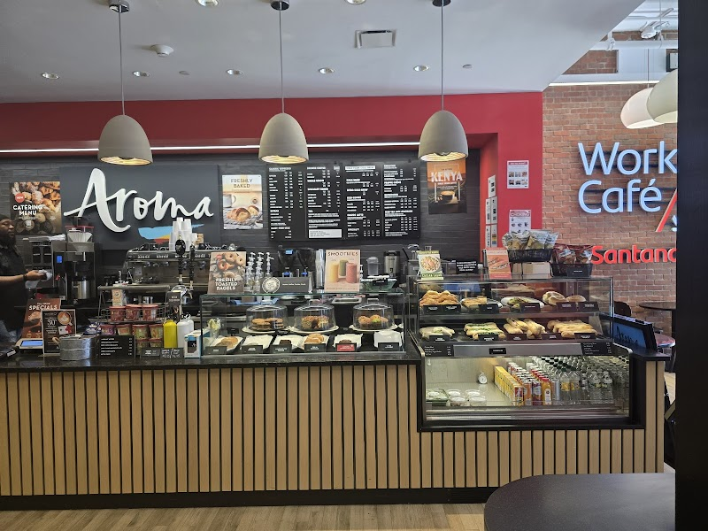
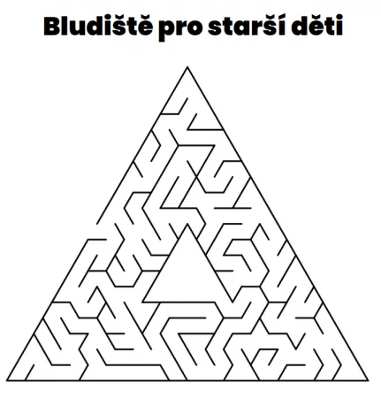

Quiz
Projekt zaměřený na tvorbu interaktivního vědomostního kvízu.
Student informačních technologií se zájmem o tvorbu webu a digitální projekty.

Jsem student střední školy. Ve volném čase se věnuji fotbalu, práci na počítači a poznávání nových technologií.
„Pozornost je nejvzácnější a nejčistší forma štědrosti.“
— Simone Weil
Projekt zaměřený na tvorbu interaktivního vědomostního kvízu.

Návrh jednoduchého a přehledného webového rozhraní pro kavárnu.

Tvorba logické hry ve formě trojúhelníkového bludiště.
| Dovednost | Úroveň |
|---|---|
| HTML | Základní |
| CSS | Základní |
| Práce s počítačem | Pokročilá |
| Internet a technologie | Pokročilá |
V případě dotazů mě můžete kontaktovat prostřednictvím e-mailu.
E-mail: jakub.eliasek15@gmail.com